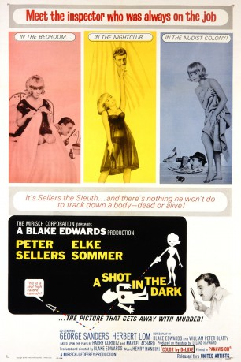

#4745 Ein Rosarote Panther - Schuß im Dunkeln
Alternativ: A Shot in the Dark
 
 IMDB-Wertung: 7.6 / 10
IMDB-Wertung: 7.6 / 10  Metascore: 0
Metascore: 0 
When rich M. Ballon's spanish driver is found shot dead, Inspector Jacques Clouseau is the first official on the scene. All evidence suggests Maria Gambrelli, the maid, to be the murderer. But Clouseau, being attracted to the beautiful girl, is convinced that she is hiding something. So, he has her released from jail and tries to follow her secretly. Things do not work out the way the inspector wanted and people keep being murdered, and each time innocent Maria seems to be the killer. But with someone important wanting Clouseau and nobody else to cover this case, his tolerance-challenged boss Charles Dreyfuss is close to losing his mind when casualties keep turning up. And Clouseau keeps on causing trouble without knowing it...
Jahr: 1964
Dauer: 102 Minuten
FSK: 12
Land: England Studio: United ArtistsTonspuren: DD5.1 - ,
Untertitel: Englisch,
Auflösung: 720p (1280x720) Größe: 4638 MB
Genre: Komödie, Mystery
Regisseur: Blake Edwards
Drehbuch: Ralph Ziman
Soundtrack:
Darsteller:
 Peter Sellers als Jacques Clouseau
Peter Sellers als Jacques Clouseau Elke Sommer als Maria Gambrelli
Elke Sommer als Maria Gambrelli George Sanders als Benjamin Ballon
George Sanders als Benjamin Ballon Herbert Lom als Charles Dreyfus
Herbert Lom als Charles Dreyfus- Tracy Reed als Dominique Ballon
 Graham Stark als Hercule LaJoy
Graham Stark als Hercule LaJoy Burt Kwouk als Kato
Burt Kwouk als Kato- Victor Beaumont als Gendarme
 Tutte Lemkow als Kazak Dancer
Tutte Lemkow als Kazak Dancer- Moira Redmond als Simone
- Vanda Godsell als Madame LaFarge
- Maurice Kaufmann als Pierre
- Ann Lynn als Dudu
 David Lodge als Georges
David Lodge als Georges- André Maranne als Francois
 Martin Benson als Maurice
Martin Benson als Maurice- Reginald Beckwith als Receptionist at nudist camp
 Douglas Wilmer als Henri LaFarge
Douglas Wilmer als Henri LaFarge- Bryan Forbes als Camp Attendant
- Andre Charisse als Game Warden
- Howard Greene als Gendarme
- John Herrington als The Doctor
- Jack Melford als The Psycho-Analyst
- Victor Baring als Taxi Driver
- Hurtado de Córdoba als Flamenco Dancers & Guitarist
- Fred Hugh als Balding Customer
- Rose Hill als Soprano
- Tahitian Dance Group als Tahitian Dance Group
 Pauline Chamberlain als Woman looking in Elke Sommer's car , uncredited
Pauline Chamberlain als Woman looking in Elke Sommer's car , uncredited Jack Lambert als Man , uncredited
Jack Lambert als Man , uncredited
Datei: X:\7+mehr(A-Z)\Rosarote Panther\Rosarote Panther - Schuß im Dunkeln, Ein (1964, FSK12, 1280x720).mkv seit 11.11.2016
Festplatte: HD Collection-7+mehr(A-Z)+Person
 Es gibt insgesamt 13 Filme in der Gruppe '7+mehr(A-Z)\Rosarote Panther'
Es gibt insgesamt 13 Filme in der Gruppe '7+mehr(A-Z)\Rosarote Panther'